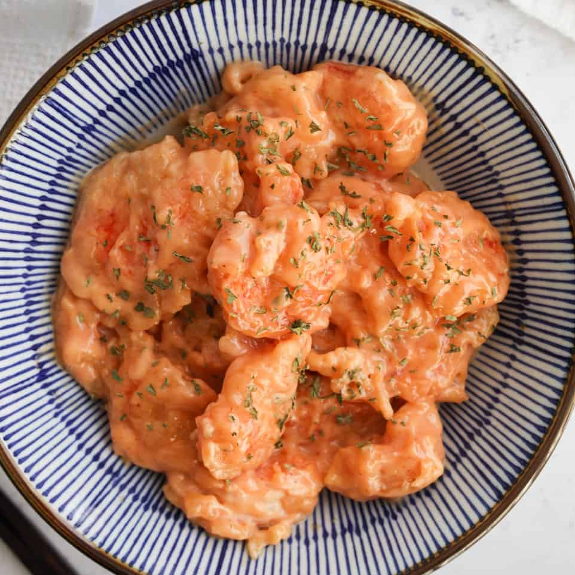

Ebi Mayo

Description
A fantastic homestyle Japanese dish, ebi mayo delights kids and adults alike with a creamy twist. Great for a bit of fun on a weeknight to mix things up.
Ingredients
- Jumbo shrimp (black tiger are best!)
- Potato starch
- Cake flour
- Salt
- Vegatable oil
- Keypie mayo
- Ketchup
- Condensed milk
- Rice vinegar
- Sugar
Steps
- First, you’ll whisk your mayo, ketchup, condensed milk, rice vinegar, salt and sugar until it’s combined. Then in another bowl, whisk together the potato starch, cake flour, salt and then pour in the water to whisk again. Next peel your shrimp, pat dry and mix the shrimp into the batter.
- Heat your oil in a pot or wok over medium heat, fry your shrimp in two batches until they are crispy and pink through out. Place the fried shrimp on a cooling rack to allow the excess oil to drip. Then gently mix your fried shrimp to the mayo sauce and enjoy!
Note: all credit to Christine's Kitchen where I got this recipe!
Christine at Home's Ebi Mayo Recipe